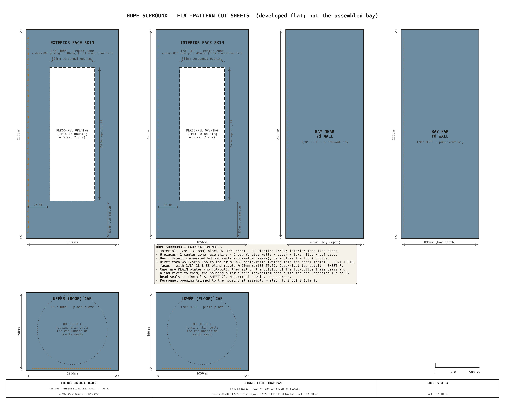

Hinged Light-Trap Panel¶
1. Purpose¶
TBS-001 requires a light-tight seal at the cargo door end of the container that simultaneously allows personnel access during operation without admitting daylight. The hinged light-trap panel fills both roles: it seals the full 2,362 × 2,388mm cargo door opening as a rigid structural panel, and incorporates a revolving drum light trap that permits operators to enter and exit the darkened interior at any time without opening the panel or breaking the light seal. In case of emergency, or to easy loading and unloading of materials, the whole hinged panel can open fully, being locked from the inside.
Sheet 1 — Front Elevation (1:20): Panel Dimensions, Drum, Hinges, Latches (interior face)

Design goals:
- 100% light exclusion — no straight-line optical path from exterior to interior
- Single-operator personnel access at any time during exposure
- 180° outward swing for full-width loading access (IBC totes, equipment)
- ~56° transport swing about the Ø89 pivot post — carries the B2 punch-out bay inboard of the ISO container doors (true min X +59mm) + hardware
- Emergency egress operable from inside without tools
- Weatherproof for outdoor field deployment (IP44 rated seals)
- Single-person mode conversion (~5 minutes)
Interactive 3D model — the revolving light-trap drum, hinged stepped panel, Ø89 swing pivot, fixed door frame (with the bottom brush seal), and Fan B. Drag to orbit, scroll to zoom.
2. Panel Construction¶
2.1 Stepped Profile¶
The panel has three thickness zones to accommodate the revolving drum in the center while keeping the corners flush with the container walls.
Sheet 2 — Plan Cross-Section (1:10 horiz / 1:1 depth): Housed Revolving Door — Housing, Drum & Light-Tight Geometry

| Zone | Width (mm) | Thickness (mm) | Construction | |------|--------------|-----------|---------------|-------------| | Near corner | 653 | 40 | 1/8" HDPE skin + 1"×1"×⅛" 6061 Al stiffener grid + 1/8" HDPE skin (40mm framed); 18mm-ply Fan-B mount band bottom→1,125mm | | Center | 1,056 | 120 | 1/8" HDPE skin + 84mm RHS frame + 1/8" HDPE skin | | Far corner | 653 | 40 | 1/8" HDPE skin + 1"×1"×⅛" 6061 Al stiffener grid + 1/8" HDPE skin (40mm framed) |
The 80mm step between corner and center zones to locate the light-trap housing; the corner zones are flush-faced panels that seal against the fixed door frame.
2.2 Frame¶
| Parameter | Value |
|---|---|
| Frame material | 50 × 50 × 3mm RHS mild steel |
| Outer dimensions | 2,362 × 2,388mm |
| Skin (each face) | 1/8" HDPE plastic sheet (rev11; same material as the drum/housing), set in U-channels — black-pigmented, light-tight, moisture/chemical-proof. Exception: an 18mm exterior-grade plywood band on the Fan B corner (bottom up to 1,125mm) for rigid fan/duct mounting + screw retention |
| Interior finish | Black-pigmented sheet (HDPE) + flat-black touch-in — optically dead at visible wavelengths |
| Frame perimeter | Welded corners, mitered joints |
| Panel weight (full panel: skins + Ø900 housing + B2 bay, excl. drum) | ~139 kg (first-principles: 96 kg framed skins + 22 kg housing + 21 kg B2 bay). See §2.4–2.5 for the movable breakdown + trade study |
2.3 Perimeter Seals¶
A 20mm closed-cell EPDM compression gasket runs the two vertical edges of the panel, seated in an extruded aluminum channel, and compresses against the fixed welded door frame (50 × 50 × 3mm RHS) when the four cam latches engage. The top and bottom edges are nylon strip-brush light seals instead (§6, paths #3/#4): because the panel edge sweeps sideways through the seal as it swings, a brush passes the edge through cleanly where a compression EPDM would drag and deform. Together they give a light-tight seal on all four sides.
A second 20mm EPDM gasket — the housing-surround seal — runs as a ring around the Ø900 light-trap housing aperture. Because the housing is fixed (only the drum rotates inside it), this gasket seals the fixed surround to the frame independently of the moving panel, all the way around the opening the housing passes through. It sits in the same exterior door plane, concentric inboard of the panel-perimeter seal (see §6, light-path #8).
2.4 Movable-Panel Weight Breakdown¶
The transport scheme swings the panel + drum ~56° about the vertical Ø89 pivot, so
the movable assembly is everything that rotates about that pivot. The breakdown
below is first-principles from the geometry constants (reproducible via
src/generators/generate_movable_panel_weight.py); it isolates the swing zone
and deducts the Ø900 housing aperture from the center skins, so it
is slightly lower than the whole-panel figure carried in the
Weight Distribution Report §3.2.
| Group | Component | Construction | kg |
|---|---|---|---|
| A · Skins + frame | Fan B mount band | 18mm ply, 0.47m × 0.99m, 2 faces | 10.2 |
| HDPE corner skins | 1/8" HDPE (near above band + far) | 12.3 | |
| Corner Al stiffener grid | 1×1×1/8 6061 angle | 2.8 | |
| Center RHS frame | 2×2×0.120in steel SHS, 11.1m | 49.2 | |
| HDPE center skins | 1/8" HDPE, Ø900 aperture deducted | 11.4 | |
| A subtotal | 85.9 | ||
| B · Housing | HDPE shell + steel flange/hub | Ø900×3/16", two 80° openings | 21.8 |
| C · Drum | HDPE C-shell (1/8") + 8mm Al caps + Ø75 shafts + 2× SKF 6215 + stiffeners + pull handle | Ø864 | 35.9 |
| D · Bay | B2 punch-out bay walls | 1/8" HDPE, 4-wall tube 0.89m deep | 20.8 |
| E · Cage | Drum support cage frame | ~25×25×3 angle, 16.1m box | 16.1 |
| F · Seals | Vertical perimeter + housing EPDM + top/bottom strip brush + drum wipers | 20mm foam + strip/felt brush | 2.7 |
| G · Latches | Cam latches (4) | ~0.5 kg each | 2.0 |
| H · Pivot (rotating) | Thrust/journal bearings + collar/hub | carries leaf at pivot | 13.0 |
| MOVABLE TOTAL (carried-rotating) | ≈198 | ||
| + transport-only locks (stays + 4 saddles) | engaged only when swung | +10 |
By material: steel 103 kg (52%), HDPE 79 kg (40%), aluminum 3 kg (1.4%), plywood 10 kg (5%, Fan B band only), EPDM/other 3 kg. (All light-lock plastic — skins, drum, bay, housing — is now one weld-compatible HDPE.)
Findings. The largest remaining single item is the steel center RHS frame (49 kg) — the structural spine carrying the drum — which is the only meaningful target left (§2.5). Because the swing axis is vertical, this mass produces no gravity overturning torque at any swing angle; it matters for the thrust-bearing/pivot-post sizing, for handling during assembly (still beyond a two-person lift — an engine crane or gantry hoist is required), and for total container payload.
2.5 Weight-Reduction¶
Black-pigmented HDPE is light-tight (proven on the drum), moisture- and chemical-proof in the wet darkroom, and floats in its channel to absorb its higher thermal expansion. A tighter stiffener- channel grid (~400–450mm centers) keeps the floppier 1/8" sheet flat at the EPDM seal line. One exception: the Fan B corner keeps an 18mm plywood band (bottom up to 1,125mm) for rigid fan/duct mounting + screw retention. The panel sits at ~139 kg. The HDPE skin + 1"×1"×⅛" Al stiffener grid + U-channel envelope is moisture/chemical-proof, light-tight, and weld-sealed (same material and weld process as the drum/housing); it costs more than a plywood build (§8.1).
3. Housed Revolving-Door Light Lock¶
The light lock is a fixed cylindrical housing + single-opening C-shell drum — the standard commercial-darkroom-door arrangement — sized for a single operator.
Sheet 3 — Drum Vertical Section Elevation (Section A-A): Walking-height orientation confirmation + Details B & C (panel bottom & top light seals)

3.1 Specification¶
| Parameter | Value |
|---|---|
| Type | Fixed cylindrical housing + single-opening C-shell revolving drum (no internal fins) |
| Housing outer diameter | Ø900mm (fixed, built into the panel center zone) |
| Housing openings | Two, 80° arc each, 180° apart — one facing exterior, one facing the interior/walkway |
| Drum (rotating) | Ø864mm C-shell, single 80° opening, ~Ø850mm clear bore |
| Passage width | ~555mm (the 80° opening) — single operator, sideways entry |
| Height | Top at Z=2,250mm (upper bearing on panel top rail) |
| Mounting | Carried with the panel — rides at Z=130 on the panel bottom rail (130mm floor gap → clears the tray rim, and the swinging cage passes over the Z115 walkway brackets). Operator steps up ~130mm over the threshold to enter; exits level onto the walkway deck (also Z=130). |
| Wall thickness | 5mm UV-HDPE housing (LT_HOUSING_T) + 1/8" HDPE drum (LT_DRUM_T) — rolled and extrusion-welded plastic skin (rev 9 / B2; was 3mm aluminum); opening edge-stiffened |
| Interior finish | Black-pigmented sheet + flat-black touch-in at welds (no etch-prime) |
| Exterior finish | UV-stabilized black/gray sheet — inherent, no primer |
| Clear walking height | 1,910mm (between bearings) |
| Internal baffles | None — light-tightness is by the fixed-housing geometry (§3.3) |
| Weight | housing ~22 kg + rotating drum ~36 kg = ~58 kg (plastic skin, ≈59% of the 3mm-aluminum ~99 kg; the steel shaft/bearings set a floor the shell mass can't drop below) |
3.2 Bearings¶
| Item | Specification |
|---|---|
| Bearing model (×2) | SKF 6215-2RS1 sealed deep-groove ball bearing |
| Bore | 75mm ID, 130mm OD, 25mm wide |
| Clearance | C3 |
| Radial load rating | 52.7 kN (basic dynamic C) |
| Operating temperature | 0–120°C |
| Stub shafts | 75mm Ø × 150mm steel, bolted through an isolated steel hub to the aluminum drum caps (dissimilar-metal joint) |
| Axial retention | Circlip on stub shaft each side |
| Upper mount | Aluminum housing top ring bolted to panel top rail (6 × M10 SS, nylon-isolated) |
| Lower mount | Steel floor collar bolted to panel bottom rail (8 × M10 SS) — no weld |
| Bearing housing height | 45mm (each) |
3.3 Light Path Verification¶
The light lock is light-tight by geometry. The fixed housing has two openings (one facing the exterior, one facing the interior/walkway), each 80° of arc and 180° apart; the rotating drum is a C-shell with a single 80° opening and no internal fins. Because each opening is narrower than 90° and the two housing openings are 180° apart, the drum opening can never align with both at once — the housing's solid wall always covers whichever opening the drum opening is not facing. So at no rotation angle is there a straight-line path from exterior to interior: daylight entering the bore through the exterior opening is stopped by the drum's solid wall before it can reach the interior opening.
See Light Trap Selection §5 and Sheet 5 (enter / transit / exit verification).
3.4 Drum Seals¶
| Location | Seal method |
|---|---|
| Top | 12mm closed-cell neoprene wiper ring bonded to drum top cap + silicone bead against ceiling mount plate |
| Bottom | 12mm closed-cell neoprene wiper ring bonded to drum bottom cap + silicone bead against floor mount plate |
| Drum↔housing rotating seal | Felt/brush wiper strips on the two vertical edges of the drum opening sweep against the housing inner wall as the drum turns, blocking light leaking around the opening; top + bottom felt wiper rings close the ~15mm annular running gap |
| Housing-to-panel gap | 15mm radial clearance, closed by 20mm neoprene compression strip bonded to the panel aperture |
| Weather rating | IP44 (splash and rain protection) |
3.5 Handle¶
An off-the-shelf 12″ (308mm) round pull handle (McMaster 1871A65, Ø0.5″ bar, 2.06″ standoff) is mounted on the interior face at 900mm height. It bolts (1/4″ screws) to a steel stile that spans and bolts to the two aluminum caps — no welds, and no through-bolt penetration of the drum wall on the exterior face, so the pull load lands in the structural caps and no light leak path is created. The operator enters by pushing the bare exterior drum wall, then uses the interior pull handle to pull the drum closed and brace during exit.
3.6 Access & Light-Tightness Verification (both tests pass)¶
Sheet 5 — Light-lock access & light-tightness verification

1. Does a person fit? — Yes. The drum is a single-opening C-shell, so the whole ~Ø850mm bore is clear standing space. The 80° opening gives a ~555mm passage (sideways entry), enough for a single operator to enter and turn inside. Emergency egress remains the whole panel swinging open.
2. As the drum rotates, can daylight enter? — No. The fixed housing's two 80° openings are 180° apart, so the 80° drum opening can never reach both at once: at enter the exterior opening feeds the bore but the interior opening is covered by the drum's solid wall; at transit both housing openings are covered; at exit the exterior opening is covered. There is no straight-line path at any angle.
4. Hinges and Latches¶
4.1 Hinges¶
| Parameter | Value |
|---|---|
| Type | Vertical Ø89×8 CHS pivot post (the reused film-plane far-left upright) on a thrust collar + top/bottom hub bearings — STRUCTURAL SIGN-OFF REQUIRED |
| Quantity | 1 post (carries the full bay + housing + drum swing cantilever, ~3.6 kN·m, SF ~3.7 in S355) |
| Position | Far-left panel edge |
| Mounting | Post fixed top + bottom to the container end structure; the swinging frame rotates on the hub bearings (vertical axis ⇒ balanced at any angle, no gravity torque) |
| Swing | ~56° inboard to the transport position (locked by the top + bottom wall stays); swings clear of the door plane for personnel/equipment access |
The plastic-skinned drum/housing (LT_DRUM_T = 1/8" HDPE, LT_HOUSING_T = 5mm UV-HDPE) keeps the added mass modest. Because the pivot axis is vertical, the assembly is balanced at any swing angle — no gravity torque and no free-edge sag, so no swing-support caster is needed (the old B2 barrel-hinge + caster scheme is retired). The pivot post and its bearing + weld pattern require a structural engineer's sign-off before fabrication.
4.2 Cam Latches¶
| Parameter | Value |
|---|---|
| Model | Southco C2-33 cam compression latch |
| Quantity | 4 (one at each corner) |
| Positions | 210mm and 2,152mm from side edges, 220mm and 2,168mm from floor |
| Mounting face | Interior — deliberate safety design for emergency egress |
| Seal compression | Compresses EPDM perimeter gasket against fixed door frame |
Emergency egress: If the revolving drum jams and prevents normal egress, an operator inside the container can release all four interior-mounted cam latches independently and push the panel open outward. The panel swings 180° clear of all interior equipment.
4.3 Interior Pull Handle¶
A grab/pull handle is through-bolted to the panel's structural frame on the interior face — the left jamb of the drum aperture, at waist height — so a single operator can grip it and swing the heavy (~139 kg movable) panel open from inside the container, both for the emergency-egress swing (§4.2) and to initiate the transport rotation (§5). It bolts to the steel frame, not the HDPE skin.
| Parameter | Value |
|---|---|
| Type | 316 SS D-grab pull handle, ~300mm grip span, 25mm round bar |
| Mounting | Through-bolted to the 50 × 50 × 3mm RHS frame jamb beside the drum aperture — 2 × M8 SS bolts passing through both RHS walls into an interior backing plate/washers (not screwed to the HDPE skin) |
| Position | Interior face of the swinging panel, on the left drum-aperture jamb. The transport swing pivots on the far edge (§5), so this near-of-center jamb keeps the operator's leverage while landing the load on frame steel right beside the drum (rather than the unbacked HDPE skin) |
| Finish | Matte-black powder-coat — the interior must stay optically dead (stray-light control for the pinhole), so the handle is not left bare/reflective |
See §8.1 for the part; the handle is also shown on the interior-face Sheet 1 front elevation.
Sheet 6 — Interior Pull Handle: mounting detail (handle through-bolted to the RHS frame)

5. Rotating Transport System¶
For transport the entire swinging assembly — the panel center section, the B2 punch-out bay, and the housing + revolving drum — revolves ~56° about a vertical Ø89mm CHS pivot post (the reused film-plane far-left upright, at X=175mm / Yd=2,287mm). The swing carries the bay's ~890mm exterior overhang from outside the cargo-door plane to inboard of it, so the ISO doors close.
Two narrow strips stay fixed at the door plane and do not swing: the near strip and the far strip. The cargo doors close outboard of the fixed near strip.
To let the swinging cage cross the X=260mm film-plane rail line, the two left film rails (top-left + bottom-left) lift out of their drop-in saddles and the left walkway + door-end near-deck section lift out before the swing; all are re-seated to datum afterward.
5.1 Panel Positions¶
Sheet 4 — Rotating transport + swing clearance: panel swings 56° about the pivot (camera vs swung), removable left rails

| Position | Bay front-right corner X | Container doors clear? |
|---|---|---|
| Operational (0°) | −890mm (bay protrudes ~890mm outside the door plane) | No — the cargo doors stay open during operation |
| Transport (swung 56°) | +59mm (true min X over the whole swept assembly — computed 58.6mm at this corner) | Yes — the swept frame is fully inboard of the closed door |
5.2 Locking¶
| State | Method |
|---|---|
| Operational (0°) | 4 × interior cam latches (§4) compress the EPDM vertical perimeter + cut seals against the door frame; the top + bottom strip-brush seals are passive (always engaged, no compression) |
| Transport (swung 56°) | Top + bottom wall stays — hook welded to the swinging panel's left perimeter 2×2×0.120in steel SHS stile (the steel frame member at the swing cut) ↔ eye on the near wall, tensioned by turnbuckle, forming a couple. Engaged after the swing, released before swing-back. |
Stay hooks land on steel, not the skin. The transport-stay couple carries real tension, so both hooks weld to the left perimeter RHS stile of the swinging frame — not the 1/8" HDPE plastic skin (rev11). They were relocated from the mid-corner (Yd≈350), which the plastic-skin swap left unbacked above the plywood band; the perimeter stile is the farthest point from the pivot (best lever arm) and a continuous welded steel load path into the frame.
5.3 Floor Gap¶
The panel + drum cage ride at a 130mm floor gap (the grate-top level set by the +50mm walkway raise), carried by the pivot post on its thrust collar + hub bearings. The gap clears the processing tray rim with margin; it is also the threshold the drum revolves over and the floor datum the swing arc sweeps at.
The housing + drum ride at the same Z=130, so the swinging cage passes over the tray basin — and over the Z115 door-end walkway brackets — rather than colliding with them. The swing (about a vertical pivot, so the bottom edge stays at Z=130 throughout) is what makes the deep Ø900 housing transport-feasible without a slide; a floor-mounted housing would have fouled the tray. The 130mm floor gap is closed in the operational position by the continuous bottom brush seal (§6).
The 130mm gap would otherwise be a straight light path, so it is light-sealed by the fixed-frame bottom brush seal described in §6 — a threshold-mounted nylon-filament strip brush whose bristles the panel bottom edge sweeps through. Because it is a brush (neither a floor-contact seal nor a compression EPDM), it never fouls the tray rim, seals continuously without cam-latch compression, and the panel edge passes through it cleanly on the swing.
5.4 Transport Conversion Sequence¶
The rotation transport + swing clearance vs the film-plane left mechanism is shown in Sheet 4 (above): the panel + drum swing ~56° about the pivot, pulling the bay inboard of the door plane (true min X +59 mm); the two left film rails are struck (removable) so the swinging cage transitions the X=260 rail plane, then re-seat to the film datum.
The swing carries the drum cage through X=260, where the film-plane mechanism's left edge sits, so the two left film rails (TL + BL) must be struck before the swing and re-seated after (the tapered dowels return the film datum). The muslin screen must be struck regardless — the fragile screen cannot travel mounted. The swing clears the door-end walkway brackets at Z: the cage underside at Z=130 passes over the Z=115 bracket tops, so no walkway bracket is demounted (superseding the old slide, which swept past them at floor level and required striking them).
Order of operations (single person, ~10 min) — see the Operating Manual §5.5:
- Park the revolving drum and pin its rotation.
- Remove the muslin screen from its frame and stow it (rolled); knock down the demountable brace cage (saddle/thumbscrew portals).
- Lift out the left walkway + door-end near-deck section.
- Strike the two left film rails (TL + BL) — release each clamp bar, lift the rail out of its saddles, and stow.
- Release the four Southco cam latches (releases the perimeter + cut seals).
- Swing the frame ~56° inboard about the pivot, assisted (balanced about the vertical axis — no gravity torque; control momentum at the stop).
- Engage the top + bottom wall stays (the transport lock).
- Close the ISO cargo doors (they clear the swung frame by +59 mm).
Re-deployment reverses the sequence.
6. Light Seal Design¶
The swinging panel seals against the fixed door frame in its operational (closed) position. Five light ingress paths are sealed:
| # | Light path | Seal method |
|---|---|---|
| 1 | Panel perimeter (left/right) → door frame | 20mm EPDM gasket in an aluminum channel down each vertical edge, compressed by the 4 × Southco C2-33 cam latches against the fixed door frame at X=0. (The top + bottom edges are strip-brush seals — paths #3/#4 — not compression EPDM.) |
| 2 | Swing cuts → fixed strips | The swinging center+corners separate from the two FIXED strips (near Yd0–180, far Yd2287–2362, which carries the pivot) along vertical cuts. A 20mm EPDM cut seal runs the full panel height down each cut, compressed by the cam latches when the panel is latched at the door plane. Replaces the old sliding-carriage beam/guide-slot brush seals. (Sheet 3, Detail D.) |
| 3 | Panel bottom → 130mm floor gap | Fixed-frame bottom brush seal — a continuous nylon-filament strip brush in an aluminum holder on the threshold, its bristles rising above the panel bottom edge (Z=130) across the full panel-bottom width, continuous (no notch) — the housing/drum ride at Z=130 and never reach the floor, so the gap is uniform and the bristle wall closes it light-tight. The panel bottom edge sweeps through the bristles as the panel swings — so this edge is a brush, not a compression seal (a compression EPDM would drag and deform under the sideways sweep; a brush passes the edge through cleanly — the same principle as the drum-opening brush seals). The bristle density is the seal; no cam-latch compression on this edge. (Sheet 3, Detail B.) |
| 4 | Panel top → frame gap | Fixed-frame top brush seal — the mirror of #3: a nylon-filament strip brush in a holder on the frame top rail, its bristles reaching ~30mm below the panel top edge. The drum stub shaft stops below it, so the brush runs as one continuous member across the full panel-top width — no notch — meeting across the center. The panel + drum-box top edge sweeps through the bristles as the panel swings — a deliberate ~30mm bristle overlap in the closed position, not a clash. No cam-latch compression on this edge; the bristles are the seal. (Sheet 3, Detail C.) |
| 5 | Housing surround → door frame | The Ø900 light-trap housing carries the revolving drum and swings with the panel. A second 20mm EPDM gasket rings the housing aperture (floor gap up to the housing top at Z=2250), concentric inboard of the panel-perimeter seal (#1), seated in the door plane. In the closed position it seals the housing surround to the frame all the way around the opening — light-tight. (3D: the door_frame() "Housing surround seal", in both the light-trap and overview models.) |
Seal verification: After mode conversion, the operator performs a 5-minute dark-adaptation check inside the container with all seals engaged. Any visible light points are marked with gaffer tape for re-sealing.
7. Fixed Door Frame¶
A fixed welded door frame provides the seal landing surface (perimeter, cut, and lip seals) for the swinging panel, and the structural anchor for the wall-stay eyes.
| Parameter | Value |
|---|---|
| Material | 50 × 50 × 3mm RHS mild steel |
| Position | X=0 (container end wall inner face) |
| Function | Seal landing for the swinging-panel vertical perimeter + cut seals + housing-surround EPDM, plus the top + bottom strip-brush light seals |
| Attachment | Welded to container end wall structural members |
| Cut-seal landings | 2 × vertical EPDM landings (the swing cuts between the swinging panel and the fixed strips) |
| Bottom brush seal | Continuous nylon-filament strip brush in an aluminum holder on the threshold, full panel-bottom width (no notch — drum rides at Z=130) — the panel bottom edge sweeps through the bristles (see §6 path #3) |
| Top brush seal | Mirror of the bottom: continuous nylon-filament strip brush in a holder on the frame top rail, bristles reaching ~30mm below the panel top edge, full panel-top width and continuous across the center (the drum does not reach the top, so no notch) — the panel + drum-box top edge sweeps through the bristles (see §6 path #4) |
8. Parts List¶
8.1 Panel Structure¶
| Item | Spec | Qty | Supplier | Est. cost |
|---|---|---|---|---|
| 2×2×0.120in steel SHS (6 m bulk lengths) | Frame perimeter + internal members | 4 ea | Metal Supermarkets | $120–$160 |
| 1/8" black HDPE sheet (48×96) (46684) | Panel skins, both faces (~12 m², 4× 4×8 ft sheets) — rev11, replaces 18mm ply. 1/8" HDPE is nearest stock to the 4mm PANEL_SKIN_T nominal (weld-compatible with the HDPE housing/drum); the U-channel grid (~400–450mm centers) keeps the skin flat, so the 0.8mm is immaterial. US Plastics 46684 $123.34/sheet. | 4 sheet | US Plastics / TAP Plastics | $493 |
| Pressure-treated pine plywood (Fan B mount band + cooler base) (231428) | ¾" CC pressure-treated pine, full 4'×8' sheet. Fan B mount band (610×1220mm, one corner bottom→1,125mm) AND the cooler stowage base plate (600×350) are both cut from this one sheet (plywood-base-12 retired 2026-07-27). PT is defensible at the vented cargo-door end; plenty of leftover from one sheet. | 1 4'×8' ¾" sheet | Home Depot | $70 |
| 1"×1"×1/8" Al angle, 8 ft — corner-zone stiffener grid (2EYP1) | Corner-zone anti-oil-can rib grid — light-tightness is carried by the two black HDPE skins and the latch/fan load by the RHS frame + ply band, so the corner only needs stiffening against oil-can. Per corner: 1 vertical (2,258mm) + 2 horizontal (653mm) 1"×1"×1/8" (25×25×3.2mm) Al angle ribs, ~325×750mm bays, holding both 1/8" HDPE skins flat within the 40mm framed cavity. The leaf is VERTICAL, so skin self-weight is in-plane; the grid only resists out-of-plane oil-can (works with the U-channel skin retainers at ~400-450mm centers, report §2.5). ~7.1m installed → 4× 8 ft (2,438mm) sticks for clean piece-fit (2 sticks → the 2 verticals, 2 → the 4 horizontals + spare). ~2.9 kg installed. Grainger 2EYP1 $12.20/8ft firm (2026-07-29). | 4 ea | Grainger | $49 |
| 20mm EPDM gasket (per meter, closed-cell) (B089GJQ96Z) | Perimeter seal (~10 m) + housing-surround ring (~6 m) + 2× vertical cut seals at Yd180/2287 (~5 m) | 21 m | Amazon (OKAYASU) | $24–$52 |
| Aluminum U-channel, 1/8-panel (per meter) | Gasket retainer + 1/8" HDPE-skin retention (perimeter + housing-surround + stiffener grid). SECTION: aluminum '1/8-panel' U-channel — inner slot ~3.2mm (captures the 3.18mm/PANEL_SKIN_T HDPE skin), ~10–12mm legs, ~1.5mm wall. TOTAL LENGTH: 40m (pick a stock 1/8-panel profile; only the 3.18mm slot is fixed by the skin). | 40 m | Online Metals | $120–$200 |
| Southco C2-33 cam compression latch | Interior-mounted corner latches (compress the perimeter + cut + lip seals) | 4 ea | Southco / McMaster-Carr | $76–$104 |
| 1/8" black HDPE sheet (48×96, ×2) (46684) | B2 punch-out bay — 4-wall light-tight tube (~890mm deep) around the housing (rev11); 4 walls, 2 per 4×8 sheet. 1/8" HDPE nearest stock to 4mm (weld-compatible with the HDPE housing/drum); EPDM lip cut from the panel-epdm perimeter roll (not billed here). US Plastics 46684 $123.34/sheet. | 2 sheet | US Plastics / TAP Plastics | $247 |
| Flat black paint (RAL 9005) | Bay/weld touch-in (HDPE skins are pre-pigmented black) | 1 qt | Local fab | $10–$20 |
| 304 SS D-grab pull handle (~300mm) + 2× M8 SS bolts + backing plate, matte-black | Interior pull handle — through-bolted to the frame (§4.3). 304 chosen over 316 (~$186); interior / non-wet location. | 1 ea | StrongAr Hardware | $70–$90 |
| Panel total | $1,278–$1,484 |
The panel pivot post + bearings + drum cage + wall stays are itemized in §8.3.
8.2 Housed Revolving Door (housing + drum)¶
| Item | Spec | Qty | Supplier | Est. cost |
|---|---|---|---|---|
| 3/16" UV-stab HDPE sheet, black — 48×96 (×3) (46685) | Ø900 fixed housing shell (~65 ft²), rolled + extrusion-welded from 3× 4×8 ft 3/16" (≈5mm) UV-stab HDPE sheets — the 111" circumference needs 3× 48" sheet widths (2 fall ~15" short). ~33% offcut on the 3rd sheet; a 5×10 ft sheet would cut to 2 (optimize at order). US Plastics 46685 $184.99/sheet. | 3 sheet | US Plastics / TAP Plastics | $555 |
| 1/8" black HDPE sheet — 48×96 (×3) (46684) | Ø864 revolving drum shell (~65 ft²) — rolled + extrusion-welded 1/8" HDPE (106.9" circ needs 3× 48" widths). A light-tight cover over the steel/Al structure; its 1/8" is non-structural (lighter = easier revolve, less bearing load). The 2 end caps are now 8mm 6061-T6 ALUMINUM (ll-caps-al) — NOT HDPE — since they carry the stub-shaft hubs into the SKF 6215 bearings. US Plastics 46684 $123.34/sheet. | 3 sheet | US Plastics / TAP Plastics | $370 |
| 8mm 6061-T6 aluminum plate — 2 drum caps (Ø855) | Both drum end caps (8mm 6061-T6, Ø855, identical) — waterjet 2 discs + the 4×M10 hub bolt circle (Ø120 PCD) + the 280° rim-angle rivet holes. STRUCTURAL: carry the bolted stub-shaft flanges into the SKF 6215 bearings. Est. material + waterjet (Online Metals); firm at order. | 1 lot | Online Metals / Industrial Metal Supply | $400–$700 |
| 25×25×3 6061-T6 Al angle — 2 rim rings (rolled R427) | 2 rolled rim-angle rings (25×25×3 6061-T6, R427, ~5.4 m total) — the shell→cap lap-joint standing lip, riveted to both Al caps over the 280° arc. Material + roll. Est.; firm at order. | 1 lot | Online Metals / Industrial Metal Supply | $45–$90 |
| SKF 6215-2RS1 sealed bearing (6215-2RS) | Top and bottom (drum rotation). Ø75 bore × Ø130 OD × 25mm wide, C=52.7 kN, both-sides sealed (6215-2RS / 6215-2NSE; SKF designation 6215-2RS1). Buy the ABEC-1 grade: the drum is a hand-rotated, low-speed, low-load light-lock — the tighter ABEC-3 tolerance buys nothing here (SKF's standard 6215-2RS1 is Normal/P0 = ABEC 1). VERIFIED $60.59 ea at Bearings Direct 2026-07-18. ALT: McMaster 6138K125 @ $394.88 ea — a heavy commodity-bearing premium, prefer the distributor. | 2 ea | Bearings Direct / McMaster-Carr | $121 |
| 75mm Ø × 150mm steel stub shaft | Bearing shafts | 2 ea | Steel service center | $30–$50 |
| 1/8" 18-8 SS blind rivets — shell→cap lap (100-pack) (97525A425) | Shell→cap lap rivets (~35/cap ×2 ≈ 70 → 1 pack of 100). 1/8" (Ø3.18) 18-8 SS low-profile head, grip 0.188–0.25", drill #30 (Ø3.3). Wet in DP8010 for light-tightness. $13.83/100 firm. | 1 pack-100 | McMaster-Carr | $14 |
| 1/8" 18-8 SS blind rivets — housing→frame lap (100-pack) (97525A435) | Housing→frame lap rivets (~26/edge ×2 ≈ 52 → 1 pack of 100). 1/8" (Ø3.18) 18-8 SS, grip 0.313–0.375", drill #30. $14.59/100. | 1 pack-100 | McMaster-Carr | $15 |
| 3M Scotch-Weld DP8010 structural adhesive (green, 45 mL) (7467A36) | Structural LSE acrylic — bonds + light-seals the HDPE lap joints (shell→cap, housing→frame, edge channels) and wets the open rivet mandrel bore for light-tightness. 45 mL cartridge + mixing nozzle. $76.29 firm. | 1 ea | McMaster-Carr / 3M | $76 |
| 6063-T5 Al U-channel opening-edge stiffeners (×4) + L-clips | 4× bonded Al U-channel (~20×18×3, ~2.1 m each ≈ 8.5 m) stiffening the housing's two free HDPE opening edges — replaces the steel jamb posts — + 8× L-clip + 8× M8 end bolts (channel ends bolt to the top/bottom beams). Est.; confirm stocked section. | 1 lot | Online Metals / McMaster-Carr | $55–$110 |
| #4 (3/16") black-nylon strip brush — running-gap light-seal wiper (×4 lines) | 4 vertical #4 (3/16") staple-set strip brushes — the running-gap light seal (drum↔housing). Metal channel backing, 0.008" BLACK nylon, 0.687" (17.5mm) trim; each snaps into an Al flange holder (ll-wiper-holder) that is flange-riveted to the rotating drum OD (rivets in the flange, clear of the brush — a 3/16" channel is too small to rivet through). One 8 ft (2.44 m ≥ 2.12 m drum ht) piece per line → 4× 8ft. Est.; firm at order. | 4 8ft | Gordon Brush / Tanis Brush | $88–$160 |
| Anodized-Al straight-flange holder for the #4 wiper brush (×4 lines) (AH400436) | 4× extruded anodized-aluminum straight-flange holders (0.050" wall) for the #4 (3/16") strip brush — the brush channel snaps in; the offset flat flange blind-rivets to the drum OD, so fasteners land in the aluminum flange, clear of the brush. One 8 ft length per line → 4× 8ft. Exact profile P/N confirmed at order (Tanis/Gordon release the section via CAD/quote). | 4 8ft | Tanis Brush / Gordon Brush | $72–$160 |
| 12mm closed-cell neoprene — top/bottom cap wiper seals | Top + bottom drum-cap wiper seals (12mm closed-cell neoprene, PSA back) + silicone bead to the frame plates. The drum↔housing running-gap seal is now the drum-mounted brush (ll-wiper-brush), not felt. | 1 lot | Canal Rubber / McMaster-Carr | $25–$40 |
| Silicone bead sealant (black, UV-stable) (RDX1001bl) | Bearing-housing / light-trap seam seal. Maxisil black natural-stone silicone, 10.5 oz (weather/UV grade, neutral-cure — not a mildewcide bath caulk). | 1 ea | Home Depot | $20 |
| 12" round pull handle — McMaster 1871A65 (1871A65) | Interior handle — off-the-shelf 12.13" unthreaded-through-hole-mount round pull handle (Ø0.5" bar, 2.06" standoff, 1/4" mounting screws). BOLTED at its two feet to the handle stile (ll-handle-stile) — 1/4" screws tapped into the RHS wall — NOT welded, and not to the drum wall. $6.43 firm. | 1 ea | McMaster-Carr | $6 |
| 40×40×5 SS RHS pull-handle stile (cap→cap) + M12 cap bolts | Steel stile (40×40×5 SS RHS, ~2.1 m) spanning + bolted between the two Al caps — carries the pull-handle load into the structural caps, NOT the thin HDPE wall. The open RHS is closed at each end by a SOLID STEEL PLUG (2× ~30×30×40 blocks cut from bar, cross-bolted through the tube walls with 2× M8 each) that gives the tube a bolting face; a single M12 tapped into each cap clamps the plug up to the cap (blind, ~8mm engagement — no pierce). The off-the-shelf pull handle (ll-grab-rail, McMaster 1871A65) bolts to the stile (1/4" screws tapped into the RHS wall). Est.; firm at order. | 1 lot | Metal Supermarkets / Online Metals | $50–$95 |
| Matte-black interior finish | Black-pigmented sheet (no etch-prime); scuff + flat-black touch-in at welds | 1 ea | Local fab | $40–$70 |
| Bolts/nuts/isolation washers — cap/ring/collar/stile/handle/edge/housing (91294A328) | 18-8 SS, buy one pack per line (generous spares): F1 cap→flange 8× M10×1.5 CSK (91294A328, $11.58/25); F2/F3 ring/collar→beam 14× M10×1.5 COUNTERSUNK flat-head into the rivet-nuts — flush in the ring/collar underside (McMaster 91294A334, $5.22/10 → 2 packs $10.44; same CSK family as F1); F4 stile→cap 2× M12×1.75 into the caps via the RHS-end plugs (91180A743, $12.40/10) + 4× M8×1.25 plug cross-bolts (from the F6 M8 pack); F5 pull-handle feet 4× 1/4"-20 (90272A537, $7.21/100); F6 edge-channel→beam + stile-plug cross-bolts 12× M8×1.25 (91280A083, $11.17/50); F7 housing→panel 8× M10×1.5 CSK (91280A370, $10.55/25) + 8× M10 nuts (90576A118, $9.53/50); W ~22× M10 nylon isolation shoulder washers (95610A400, $18.39/100) at every steel↔Al/HDPE joint. Rivet-nuts + blind rivets are separate lines. ≈$91 firm. | 1 lot | McMaster-Carr | $91 |
| M10 twist-resistant rivet-nuts (ring/collar→beam) + setting tool (95105A199) | 14 needed (6 top-ring + 8 floor-collar → the 3mm RHS axle beam wall, flange on the near face + barrel through into the bore, per Sheets 5/10). 20× M10×1.5 twist-resistant (anti-spin, chromate-plated steel) 0.8–3.0mm grip, 95105A199 ($8.12/10 → 2 packs $16.24) + 1× M10 rivet-nut setting tool (96349A866, $36.62). Twist-resistant over SS since the joint is torqued and sits in the dry walk-through zone. ≈$53 firm. | 1 lot | McMaster-Carr | $53 |
| 1/8" blind rivets — brush-holder flange → drum OD (250-pack) (97447A015) | ~72 rivets (4 brush-holder lines × ~18 @ 120mm) fastening the Al holder flanges to the rotating drum OD — grip ~4.5mm (1.27mm Al flange + 1/8" HDPE). $10.78/250 firm. | 1 pack-250 | McMaster-Carr | $11 |
| #14 self-drilling TEK screws — rim-angle → frame beam | ~24× #14 (Ø6.3) self-drilling TEK screws fastening the rolled Al rim-angle flat legs to the steel frame top + bottom beams (2× 100° arcs each, ~150mm pitch) — REPLACES the Al→steel weld (Sheets 9/10; avoids welding aluminum to the steel frame). Short (~3/4", grip 3mm Al + 3mm steel wall); hex washer head. Est.; firm SKU at order. | 1 lot | McMaster-Carr | $8–$12 |
| Fabrication — roll + weld 2 HDPE cylinders, roll rim-angle, fit metal caps/bearings | ~16–22 hrs: roll + hot-air/extrusion-weld the 2 HDPE cylinders, roll the Al rim-angle rings, fit the metal caps + SKF 6215 bearings + stub shafts, rivet the lap joints, mount the drum brush holders + edge channels + pull-handle stile. | 1 lot | Local plastic + metal fab | $800–$1,150 |
| Lightlock total | $2,945–$3,969 |
8.3 Swing Pivot Hardware¶
| Item | Spec | Qty | Supplier | Est. cost |
|---|---|---|---|---|
| Ø89×8mm CHS pivot post + machined hub / thrust collar | Upgrades the reused film far-left upright; carries the ~3.6 kN·m swing cantilever — SF 3.7 in S355. PIPE sourced: 3" NPS Sch 80 (Ø88.9 OD × 7.6mm wall), 36" ≈ $135 (Speedy Metals). The machined hub / thrust collar + 2 journal bands (Ra ~0.4 µm, iglide runs on soft shafts) are FAB → pending blueprints. Band held est pending the fab quote. | 1 ea | Metal Supermarkets / Speedy Metals | $180–$300 |
| Thrust ball bearing, 51118 (Ø90 bore, single-direction) (51118) | Carries the ~330 kg (3.24 kN) vertical load at the post base; thrust-only (radial + moment taken by the iglide sleeves). 51118 = 90 × 120 × 22mm, static Cₒ ≈190 kN → SF >50; single-direction (gravity-down). Ø90 bore matches the Ø89 post — the machined thrust collar bears on the shaft washer. Commodity part: generic ~$25–40, branded FAG/SKF ~$50–85 (do NOT buy at Motion/Applied industrial list ~$430). Chrome steel: grease + wipe annually (humid darkroom); stainless S51118 available ~$100+ if preferred. | 1 ea | Bearings Direct / Amazon / VXB | $80 |
| iglide J flange bushing, Ø90 bore (JFM-9095-100) (JFM-9095-100) | Top + bottom radial location of the post. igus iglide J self-lubricating polymer, Ø90 ID × Ø95 OD × Ø103 flange × 100 mm long. The FLANGE gives axial location against the hub face; the OD is a light press into the hub bore. Axial load is on the 51118 thrust bearing. Maintenance-free, no oil; inert plastic — chemical-resistant (iglide J passed the igus chemical filter; iglide X isn't offered at Ø90). Service pressure ≈1.3 N/mm² vs ≈35 N/mm² allowable (>25× margin); runs on the unhardened S355 post. $130.53/ea, ships in days — replaces the made-to-order GGB DU (3-mo lead). | 2 ea | igus | $261 |
| Drum support cage, 1.5×1.5×0.120in steel SHS | Steel frame carrying the Ø900 housing + drum on the swinging leaf. #26: 40×40×3 nominal → 1.5×1.5×0.120in stock (the closest US size; material is inside the local-fab lot, so no separate per-ft line). | 1 lot | Local fab | $70–$120 |
| Top + bottom wall stays + 4-bolt anchor plates (JETBGV58X6) | Transport lock — M16 turnbuckle + eye/hook rods + inside/outside wall plates | 2 set | Fasteners Plus | $90–$120 |
| Drop-in rail saddles + tapered dowels | For the 2 removable left film rails (TL + BL); dowels set the film datum | 4 ea | Local fab / McMaster-Carr | $80–$130 |
| Swing total | $761–$1,011 |
8.4 Fixed Door Frame¶
| Item | Spec | Qty | Supplier | Est. cost |
|---|---|---|---|---|
| 2×2×0.120in steel SHS (6 m bulk lengths) | Frame members | 3 ea | Metal Supermarkets | $90–$120 |
| Tight-seal nylon strip brush + aluminum holder (~4.7 m, top + bottom) (74405T12) | Top + bottom door-frame light seals (paths #3–#4) — 2× McMaster 74405T12 nylon Tight-Seal Strip Brush (8 ft, 1" overall height, $28.88 ea) in 2× McMaster 8813T53 aluminum holder channel (8 ft, $35.37 ea) = $128.50 firm; covers full panel width top + bottom (~2× C_WID ≈ 4.7 m ≈ 15.5 ft, from 4× 8 ft lengths). The swinging panel edge SWEEPS THROUGH the bristles, so a brush (not a compression EPDM, which would drag under the sideways sweep) — same principle as the drum-opening brush seals. | 1 lot | McMaster-Carr | $129 |
| Welding / fabrication | Frame assembly + wall attachment | 1 lot | Local fab | $200–$350 |
| Door total | $419–$599 |
8.5 Cost Summary¶
| Assembly | Low estimate | High estimate |
|---|---|---|
| Panel structure (incl. B2 bay + pull handle) | $1,278 | $1,484 |
| Housing + drum (plastic skin) | $2,945 | $3,969 |
| Swing pivot hardware | $761 | $1,011 |
| Fixed door frame | $419 | $599 |
| Total | $5,403 | $7,063 |
9. Maintenance¶
| Interval | Task |
|---|---|
| Every use | Dark-adaptation light seal check (5 min) — mark any light points with gaffer tape |
| Every 20 mode conversions | Inspect the EPDM cut seals at the swing boundaries (Yd180/2287) for wear |
| Every 6 months | Inspect EPDM perimeter gasket compression; replace if permanently deformed |
| Every 6 months | Inspect neoprene drum seals (top/bottom) for wear and adhesion |
| Annually | Inspect the wall-stay turnbuckles, hooks, and eye anchors; verify tension at the locked angle |
| Annually | Grease the 51118 pivot thrust bearing; the iglide journal bushings run dry — do not oil/grease them — wipe the post journal bands clean and check for free, smooth rotation |
| Annually | Check SKF 6215 bearings for roughness — sealed for life, replace only if failed |
| Annually | Check the drop-in rail saddles + tapered dowels seat the left film rails square to datum |
| Annually | Inspect Southco cam latches for compression force; adjust or replace striker |
| Every 2 years | Re-seal drum top/bottom neoprene wiper strips and silicone bead |
| As needed | Re-apply flat black interior paint where scuffed or worn |
10. Source References¶
| Item | Source |
|---|---|
| SKF 6215-2RS1 bearing specification | SKF Product Catalog — radial load 52.7 kN basic dynamic (C), sealed, C3 clearance |
| Southco C2-33 cam latch | Southco catalog — flush-mount cam compression latch |
| Turnbuckle + eye/hook (wall stays) | McMaster-Carr turnbuckles — drop-forged jaw/eye turnbuckles for the transport lock |
| Pivot thrust bearing (51118) | Motion — SKF 51118 — single-direction thrust ball bearing, Ø90 × 120 × 22mm, static Cₒ ≈190 kN, for the pivot base |
| Pivot journal bushings (JFM-9095-100) | igus — iglide J JFM-9095-100 — iglide J self-lubricating flange bushing, Ø90 ID × 95 OD × Ø103 flange × 100L, top + bottom post radial location |
| EPDM gasket material | McMaster-Carr — closed-cell EPDM, UV-stable |
| Neoprene wiper strip | McMaster-Carr #93855K6 — closed-cell, pressure-sensitive adhesive |
| Revolving drum light trap design | See Light Trap Selection for full commercial comparison and custom specification |
| Swing mechanism specification | See Equipment Layout Report §6 for clearance analysis and light seal design |
| Panel construction drawings | See Engineering Diagrams §12 — Sheets 1–5 |